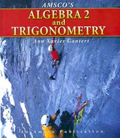

<html>
<head>
    <title>Trigonometry</title></head>

<!DOCTYPE html>

<html>
<head>
<meta http-equiv="Content-Type" content="text/html; charset=UTF-8">
<meta name="viewport" content="width=device-width, initial-scale=1"/>
<title>Rabbit Hole Math</title>
<style type="text/css">

 /* Layout */
 body {
  min-width: 630px;
 }

 table {
     border-collapse: collapse;
     width: 100%;
 }

 th, td {
     padding: 8px;
     text-align: center;
     border-bottom: 1px solid #ddd;
 }

 #container {
  padding-left: 200px;
  padding-right: 190px;
 }

 #container .column {
  position: relative;
  float: left;
 }

 #center {
  padding: 10px 20px;
  width: 100%;
 }

 #left {
  width: 180px;
  padding: 0 10px;
  right: 240px;
  margin-left: -100%;
 }

 #right {
  width: 130px;
  padding: 0 10px;
  margin-right: -100%;
 }

 #footer {
  clear: both;
 }

 /* IE hack */
 * html #left {
  left: 150px;
 }

 /* Make the columns the same height as each other */
 #container {
  overflow: hidden;
 }

 #container .column {
  padding-bottom: 1001em;
  margin-bottom: -1000em;
 }

 /* Fix for the footer */
 * html body {
  overflow: hidden;
 }

 * html #footer-wrapper {
  float: left;
  position: relative;
  width: 100%;
  padding-bottom: 10010px;
  margin-bottom: -10000px;
  background: #fff;
 }

 /* Aesthetics */
 body {
  margin: 0;
  padding: 0;
  font-family:Sans-serif;
  line-height: 1.5em;
 }

 p {
  color: #555;
 }

 nav ul {
  list-style-type: none;
  margin: 0;
  padding: 0;
 }

 h3 {
   text-align: center;
   text-decoration: underline;
 }

 nav ul a {
  color: darkgreen;
  text-decoration: none;
 }

 #header, #footer {
  font-size: large;
  padding: 0.3em;
  background: #BCCE98;
 }

 #left {
  background: #DAE9BC;
 }

 #right {
  background: #F7FDEB;
 }

 #center {
  background: #fff;
 }

 #container .column {
  padding-top: 1em;
 }

a:link, a:visited {
    background-color: white;
    color: black;
    border: 2px solid green;
    padding: 10px 20px;
    text-align: center;
    text-decoration: none;
    display: inline-block;
}

a:hover, a:active {
    background-color: green;
    color: white;
}

</style>
</head>
<body>

</body>
</html>
<header id="header"><h1>Bunny Mathematics</h1></header>

<div id="container">

 <main id="center" class="column">
  <article>

   <h1>Trigonometry:</h1>
   <p><table>
   <tr>
     <th>Chapter 1</th>
     <td><a href="http://sweethomeschools.org/files/user/3/file/Chapter09.pdf">Trigonometric Functions</a></td>

   </tr>
   <tr>
     <th>Chapter 2</th>
     <td><a href="http://sweethomeschools.org/files/user/3/file/Chapter10.pdf">More Trigonometric Functions</a></td>

   </tr>
   <tr>
     <th>Chapter 3</th>
     <td><a href="http://sweethomeschools.org/files/user/3/file/Chapter11.pdf">Graphs of Trigonometric Functions</a></td>

   </tr>
   <tr>
     <th>Chapter 4</th>
     <td><a href="http://sweethomeschools.org/files/user/3/file/Chapter12.pdf">Trigonometric Identities</a></td>

   </tr>
   <tr>
     <th>Chapter 5</th>
     <td><a href="http://sweethomeschools.org/files/user/3/file/Chapter13.pdf">Trigonometric Equations</a></td>

   </tr>
   <tr>
     <th>Chapter 6</th>
     <td><a href="http://sweethomeschools.org/files/user/3/file/Chapter14.pdf">Trigonometric Applications</a></td>

   </tr>
   <tr>
     <th>Chapter 7</th>
     <td><a href="http://sweethomeschools.org/files/user/3/file/Chapter15.pdf">Statistics</a></td>

   </tr>
   <tr>
     <th>Chapter 8</th>
     <td><a href="http://sweethomeschools.org/files/user/3/file/Chapter16.pdf">Probability and the Binomial Theorem</a></td>

   </tr>
   <tr>
     <th>SOLUTIONS</th>
     <td><a href="http://www.slader.com/textbook/9781567657029-amscos-algebra-2-and-trigonometry/"></a></td>

   </tr>
 </table></p>

  </article>
 </main>

<nav id="left" class="column">
  <a href="https://jasminengynp.github.io/">HOME</a>
  <p></p>
  <p></p>
 <h3>SUBJECTS:</h3>
 <ul>
  <li><a href="alg.html">Algebra</a></li>
<p></p>
  <li><a href="geo.html">Geometry</a></li>
<p></p>
  <li><a href="alg2.html">Algebra II</a></li>
<p></p>
  <li><strong>Trigonometry</strong></li>
<p></p>
  <li><a href="calc1.html">Calculus I</a></li>
<p></p>
  <li><a href="calc2.html">Calculus II</a></li>
<p></p>
  <li><a href="calc3.html">Calculus III</a></li>
<p></p>
  <li><a href="difeq.html">Differential Equations</a></li>
<p></p>
  <li><a href="linalg.html">Linear Algebra</a></li>
  <p></p>
  <p></p>
    <li><a href="about.html">About Me</a></li>
 </ul>
</nav>
</div>
 <div id="footer-wrapper">
  <footer id="footer"><p>Jasmine Nguyen 2016</p></footer>
 </div>

</html
